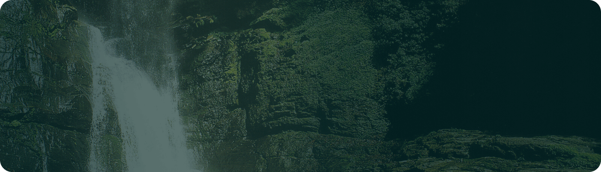
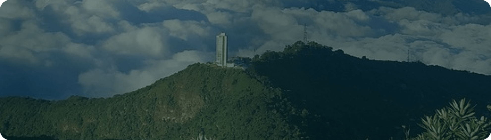

Explore the Majestic Trails of El Ávila

Quebrada Quintero
A serene waterfall in El Ávila National Park, offering a peaceful escape surrounded by lush greenery. With its crystal-clear waters and scenic trails, it's a perfect spot for relaxation and nature lovers.
Level of difficulty: Medium
 1.5-2 hours
1.5-2 hours
More Info
1.5-2 hours
1070 meters

Lagunazo
A camping area at the start of the Fila Maestra, behind the Humboldt Hotel. Known for its beautiful views, this beloved spot has become a legend, though no road access remains today.
Level of difficulty: Hard
2-3 hours
More Info
2-3 hours
2280 meters
Old Cable Car
A historic site with abandoned stations and scenic views. Though inactive since 1977, the remnants of this iconic cable car system offer a glimpse into the past and a unique, nostalgic experience for visitors.
Level of difficulty: Easy
1-1.5 hours
More Info
1-1.5 hours
2135 meters